In order to run workloads in your cluster, you need Nodes. Nodes in your cluster can be autoscaled - dynamically provisioned, or consolidated to provide needed capacity while optimizing cost. Autoscaling is performed by Node autoscalers.
Node provisioning
If there are Pods in a cluster that can't be scheduled on existing Nodes, new Nodes can be automatically added to the cluster—provisioned—to accommodate the Pods. This is especially useful if the number of Pods changes over time, for example as a result of combining horizontal workload with Node autoscaling.
Autoscalers provision the Nodes by creating and deleting cloud provider resources backing them. Most commonly, the resources backing the Nodes are Virtual Machines.
The main goal of provisioning is to make all Pods schedulable. This goal is not always attainable because of various limitations, including reaching configured provisioning limits, provisioning configuration not being compatible with a particular set of pods, or the lack of cloud provider capacity. While provisioning, Node autoscalers often try to achieve additional goals (for example minimizing the cost of the provisioned Nodes or balancing the number of Nodes between failure domains).
There are two main inputs to a Node autoscaler when determining Nodes to provision—Pod scheduling constraints, and Node constraints imposed by autoscaler configuration.
Autoscaler configuration may also include other Node provisioning triggers (for example the number of Nodes falling below a configured minimum limit).
Note:
Provisioning was formerly known as scale-up in Cluster Autoscaler.
Pod scheduling constraints
Pods can express scheduling constraints to impose limitations on the kind of Nodes they can be scheduled on. Node autoscalers take these constraints into account to ensure that the pending Pods can be scheduled on the provisioned Nodes.
The most common kind of scheduling constraints are the resource requests specified by Pod containers. Autoscalers will make sure that the provisioned Nodes have enough resources to satisfy the requests. However, they don't directly take into account the real resource usage of the Pods after they start running. In order to autoscale Nodes based on actual workload resource usage, you can combine horizontal workload autoscaling with Node autoscaling.
Other common Pod scheduling constraints include Node affinity, inter-Pod affinity, or a requirement for a particular storage volume.
Node constraints imposed by autoscaler configuration
The specifics of the provisioned Nodes (for example the amount of resources, the presence of a given label) depend on autoscaler configuration. Autoscalers can either choose them from a pre-defined set of Node configurations, or use auto-provisioning.
Auto-provisioning
Node auto-provisioning is a mode of provisioning in which a user doesn't have to fully configure the specifics of the Nodes that can be provisioned. Instead, the autoscaler dynamically chooses the Node configuration based on the pending Pods it's reacting to, as well as pre-configured constraints (for example, the minimum amount of resources or the need for a given label).
Node consolidation
The main consideration when running a cluster is ensuring that all schedulable pods are running, whilst keeping the cost of the cluster as low as possible. To achieve this, the Pods' resource requests should utilize as much of the Nodes' resources as possible. From this perspective, the overall Node utilization in a cluster can be used as a proxy for how cost-effective the cluster is.
Note:
Correctly setting the resource requests of your Pods is as important to the overall cost-effectiveness of a cluster as optimizing Node utilization. Combining Node autoscaling with vertical workload autoscaling can help you achieve this.
Nodes in your cluster can be automatically consolidated in order to improve the overall Node utilization, and in turn the cost-effectiveness of the cluster. Consolidation happens through removing a set of underutilized Nodes from the cluster. Optionally, a different set of Nodes can be provisioned to replace them.
Consolidation, like provisioning, only considers Pod resource requests and not real resource usage when making decisions.
For the purpose of consolidation, a Node is considered empty if it only has DaemonSet and static Pods running on it. Removing empty Nodes during consolidation is more straightforward than non-empty ones, and autoscalers often have optimizations designed specifically for consolidating empty Nodes.
Removing non-empty Nodes during consolidation is disruptive—the Pods running on them are terminated, and possibly have to be recreated (for example by a Deployment). However, all such recreated Pods should be able to schedule on existing Nodes in the cluster, or the replacement Nodes provisioned as part of consolidation. No Pods should normally become pending as a result of consolidation.
Note:
Autoscalers predict how a recreated Pod will likely be scheduled after a Node is provisioned or consolidated, but they don't control the actual scheduling. Because of this, some Pods might become pending as a result of consolidation - if for example a completely new Pod appears while consolidation is being performed.
Autoscaler configuration may also enable triggering consolidation by other conditions (for example, the time elapsed since a Node was created), in order to optimize different properties (for example, the maximum lifespan of Nodes in a cluster).
The details of how consolidation is performed depend on the configuration of a given autoscaler.
Note:
Consolidation was formerly known as scale-down in Cluster Autoscaler.
Autoscalers
The functionalities described in previous sections are provided by Node autoscalers. In addition to the Kubernetes API, autoscalers also need to interact with cloud provider APIs to provision and consolidate Nodes. This means that they need to be explicitly integrated with each supported cloud provider. The performance and feature set of a given autoscaler can differ between cloud provider integrations.

Autoscaler implementations
Cluster Autoscaler and Karpenter are the two Node autoscalers currently sponsored by SIG Autoscaling.
From the perspective of a cluster user, both autoscalers should provide a similar Node autoscaling experience. Both will provision new Nodes for unschedulable Pods, and both will consolidate the Nodes that are no longer optimally utilized.
Different autoscalers may also provide features outside the Node autoscaling scope described on this page, and those additional features may differ between them.
Consult the sections below, and the linked documentation for the individual autoscalers to decide which autoscaler fits your use case better.
Cluster Autoscaler
Cluster Autoscaler adds or removes Nodes to pre-configured Node groups. Node groups generally map to some sort of cloud provider resource group (most commonly a Virtual Machine group). A single instance of Cluster Autoscaler can simultaneously manage multiple Node groups. When provisioning, Cluster Autoscaler will add Nodes to the group that best fits the requests of pending Pods. When consolidating, Cluster Autoscaler always selects specific Nodes to remove, as opposed to just resizing the underlying cloud provider resource group.
Additional context:
Karpenter
Karpenter auto-provisions Nodes based on NodePool configurations provided by the cluster operator. Karpenter handles all aspects of node lifecycle, not just autoscaling. This includes automatically refreshing Nodes once they reach a certain lifetime, and auto-upgrading Nodes when new worker Node images are released. It works directly with individual cloud provider resources (most commonly individual Virtual Machines), and doesn't rely on cloud provider resource groups.
Additional context:
Implementation comparison
Main differences between Cluster Autoscaler and Karpenter:
- Cluster Autoscaler provides features related to just Node autoscaling. Karpenter has a wider scope, and also provides features intended for managing Node lifecycle altogether (for example, utilizing disruption to auto-recreate Nodes once they reach a certain lifetime, or auto-upgrade them to new versions).
- Cluster Autoscaler doesn't support auto-provisioning, the Node groups it can provision from have to be pre-configured. Karpenter supports auto-provisioning, so the user only has to configure a set of constraints for the provisioned Nodes, instead of fully configuring homogeneous groups.
- Cluster Autoscaler provides cloud provider integrations directly, which means that they're a part of the Kubernetes project. For Karpenter, the Kubernetes project publishes Karpenter as a library that cloud providers can integrate with to build a Node autoscaler.
- Cluster Autoscaler provides integrations with numerous cloud providers, including smaller and less popular providers. There are fewer cloud providers that integrate with Karpenter, including AWS, and Azure.
Combine workload and Node autoscaling
Horizontal workload autoscaling
Node autoscaling usually works in response to Pods—it provisions new Nodes to accommodate unschedulable Pods, and then consolidates the Nodes once they're no longer needed.
Horizontal workload autoscaling automatically scales the number of workload replicas to maintain a desired average resource utilization across the replicas. In other words, it automatically creates new Pods in response to application load, and then removes the Pods once the load decreases.
You can use Node autoscaling together with horizontal workload autoscaling to autoscale the Nodes in your cluster based on the average real resource utilization of your Pods.
If the application load increases, the average utilization of its Pods should also increase, prompting workload autoscaling to create new Pods. Node autoscaling should then provision new Nodes to accommodate the new Pods.
Once the application load decreases, workload autoscaling should remove unnecessary Pods. Node autoscaling should, in turn, consolidate the Nodes that are no longer needed.
If configured correctly, this pattern ensures that your application always has the Node capacity to handle load spikes if needed, but you don't have to pay for the capacity when it's not needed.
Vertical workload autoscaling
When using Node autoscaling, it's important to set Pod resource requests correctly. If the requests of a given Pod are too low, provisioning a new Node for it might not help the Pod actually run. If the requests of a given Pod are too high, it might incorrectly prevent consolidating its Node.
Vertical workload autoscaling automatically adjusts the resource requests of your Pods based on their historical resource usage.
You can use Node autoscaling together with vertical workload autoscaling in order to adjust the resource requests of your Pods while preserving Node autoscaling capabilities in your cluster.
Caution:
When using Node autoscaling, it's not recommended to set up vertical workload autoscaling for DaemonSet Pods. Autoscalers have to predict what DaemonSet Pods on a new Node will look like in order to predict available Node resources. Vertical workload autoscaling might make these predictions unreliable, leading to incorrect scaling decisions.
Related components
This section describes components providing functionality related to Node autoscaling.
Descheduler
The descheduler is a component providing Node consolidation functionality based on custom policies, as well as other features related to optimizing Nodes and Pods (for example deleting frequently restarting Pods).
Workload autoscalers based on cluster size
Cluster Proportional Autoscaler and Cluster Proportional Vertical Autoscaler provide horizontal, and vertical workload autoscaling based on the number of Nodes in the cluster. You can read more in autoscaling based on cluster size.
What's next
- Read about workload-level autoscaling